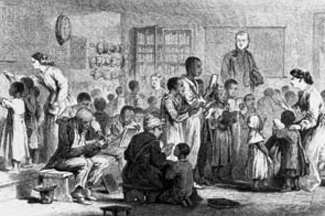
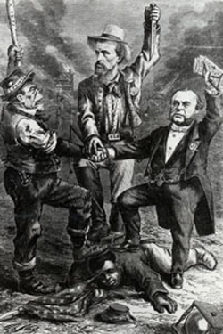

|
After the collapse of the Confederate government, Georgia was left without a
civilian administration until President Andrew Johnson, in accordance with his
plan of Reconstruction, appointed James Johnson as Provisional Governor. In
compliance with the President's mandate, James Johnson summoned a convention
that abolished slavery, repudiated the Confederate debt, and nullified the
state's secession ordinance. In November of 1865 a conservative legislature and
Governor, Charles J. Jenkins, were elected. Although this legislature ratified
the Thirteenth Amendment, it refused to confer any political rights on the large
number of African Americans in the state (about 40 percent of the population)
and sent two prominent Confederates, including former Vice President Alexander
H. Stephens, to the U. S. Senate.
|

A Reconstruction school in Georgia. Its purpose
was to teach former slaves to read.
|
As in other Southern states, conservative rule in Georgia came to a temporary
end after the passage of the Reconstruction Acts in the spring of 1867. It
became part of the Third Military District under John Pope, and in October a new
convention based on black suffrage was elected in which the Republicans obtained
a majority. Meeting in Atlanta instead of in the old state capital of
Milledgeville, the convention wrote a new state constitution that conferred
suffrage upon the freedmen, set up a free public school system, and granted
relief to debtors. Although the delegates voted down an effort to bar African
Americans from holding office, they refused explicitly to guarantee this right.
A dispute soon arose about a requisition to meet the convention's expenses.
When Governor Jenkins refused to honor it, General George G. Meade, the new
military commander, removed Jenkins and replaced him with Brigadier General
Thomas A. Ruger. A subsequent election resulted in the victory of the radical
Rufus B. Bullock, whose quest for the governorship was aided materially by
scalawag Joseph E. Brown (the former Confederate governor), as well as a
nominally Republican legislature. The ratification of the Fourteenth Amendment
and the readmission of the state (July 1868) followed.
In spite of their control of the legislature, the Republicans were never
firmly in power in Georgia. Split by factionalism and weakened by the
all-pervasive racial prejudice, they could not effectively assert themselves.
Moderates combined with Democrats to defy the Governor by refusing to disqualify
members ineligible under the Fourteenth Amendment, by preventing the election of
radical Senators, and finally by expelling all black legislators. The Ku Klux
Klan flourished and massacres of freedmen, such as the Camilla Riot, terrorized
the state's black citizens.
To restore the Republicans' power, Bullock asked Congress to remand Georgia
to military rule. But this action alienated him from Brown and other moderates,
so the party was further weakened. Congress did in fact refuse to seat the
|

The Camilla Riots, as depicted by famous
cartoonist Thomas Nast. The illustration shows Southern whites
doing their best to keep African Americans down.
|
state's Senators, but it was not until December 1869 that it complied with the
Governor's request. After the legislature was purged of members unable to take
the required loyalty oath, the ousted blacks were reinstated, and the Fifteenth
Amendment was ratified; the state was fully restored a second time (July 1870).
But Congress refused to accede to Bullock's proposal that the legislature
elected in 1868 remain in power for two additional years.
This decision made a Democratic victory a certainty, and in December 1870 the
conservative party regained control of the legislature. Desperately attempting
to retrieve his fortunes, Bullock sought to mollify his enemies by various
railroad deals, particularly one involving the lease of the state-owned Western
and Atlantic Railroad, which had been mismanaged during the Republican regime.
When this effort failed, in October 1871, before the meeting of the new
legislature, the Governor resigned, thus securing the succession of the
Republican Speaker of the House. However, in December 1871 new elections ordered
by the Democratic legislature resulted in the success of the conservative
gubernatorial candidate James M. Smith, and the "Redeemers" assumed power.
Bullock had left the state but six years later was tried for malfeasance in
office, a charge of which he was acquitted.
The conservative era that followed was typical of the "Redeemer" regimes
throughout the South. Reduced to sharecropping and utter dependence on merchants
and landowners, the freedmen were gradually deprived of political rights and
relegated to the position of a subordinate race.
Source: Hans Trefousse, Historical Dictionary of Reconstruction
(Westport, CT: Greenwood Press, 1991), 88-89.
|